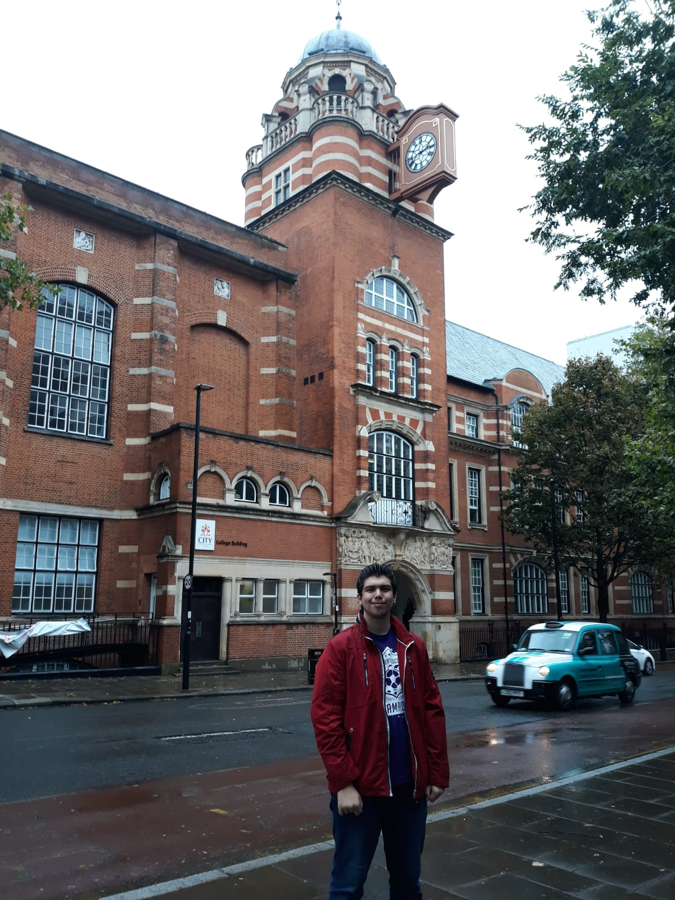
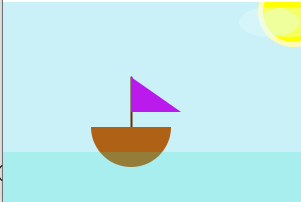

Furkan AlsancakHello. This is Furkan Alsancak. I am a Computer Science student here at City. I had a little Java programming background. I knew the concepts of what the programming is, general content of Java. However, I didnt use Processing before bootcamp, but I found it entertaining and useful. I am willing to improve my skills here at City, University of London. |
 | |
|
|
||
Bootcamp 2020: Ship AnimationMy first programming project, concluding the 2 week Programming Bootcamp at City (2020). This Processing project demonstrates a comprehensive understanding of the use of variables, methods, if statements and sound libraries. I created an animation where the ship and clouds are in a loop, moving constantly on the sketch. Also, there are functions to change the direction and speed of the ship. Press 1 to increase the speed of the ship. Press 2 to change the direction of the ship. Press 3 to decrease the speed of the ship Sea and seagull sound has also been added to the code to make the animation feel realistic. Check out the code on Github: https://github.com/furkanalsancak1/adbt204 | ||
|  | ||
|
|
||
Programming in java: Second Term Game ProjectMy first Game project, concluding the second term Programming in Java at City (2020). This game project demonstrates a comprehensive understanding of the use of game engine, java language, shape editors and sound libraries. I created a 2D Basketball game where the player can advance through levels by scoring points. Player can score points by throwing the basketball in the net. Game gets harder each level. Also, in GUI, there are buttons for saving and loading, restarting, pausing and resuming game, and also skipping level. Press 'A' and 'D' keys to move the character. Press 'F' to throw the ball Sounds have also been added. Check out the code on Github: https://github.com/furkanalsancak1/adbt204_game | ||